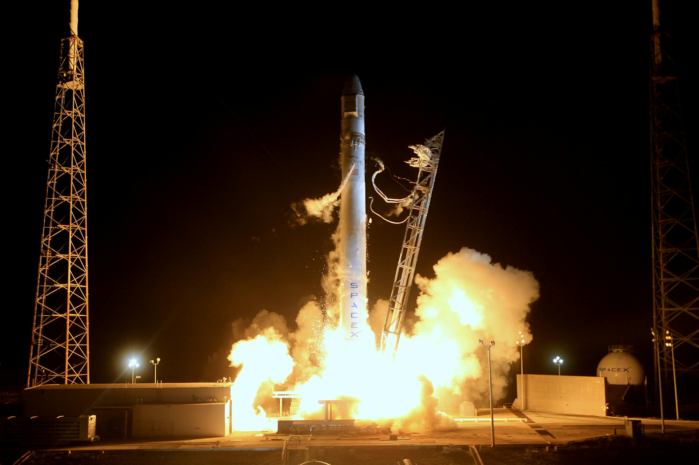
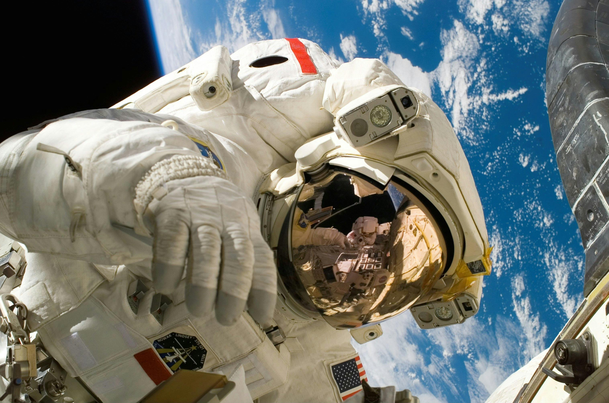
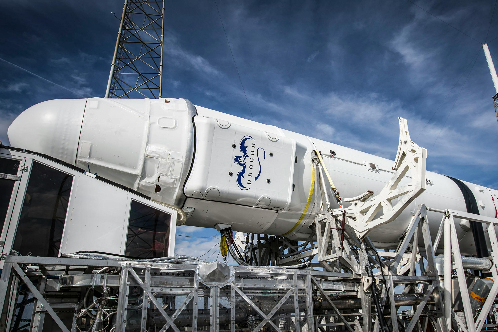
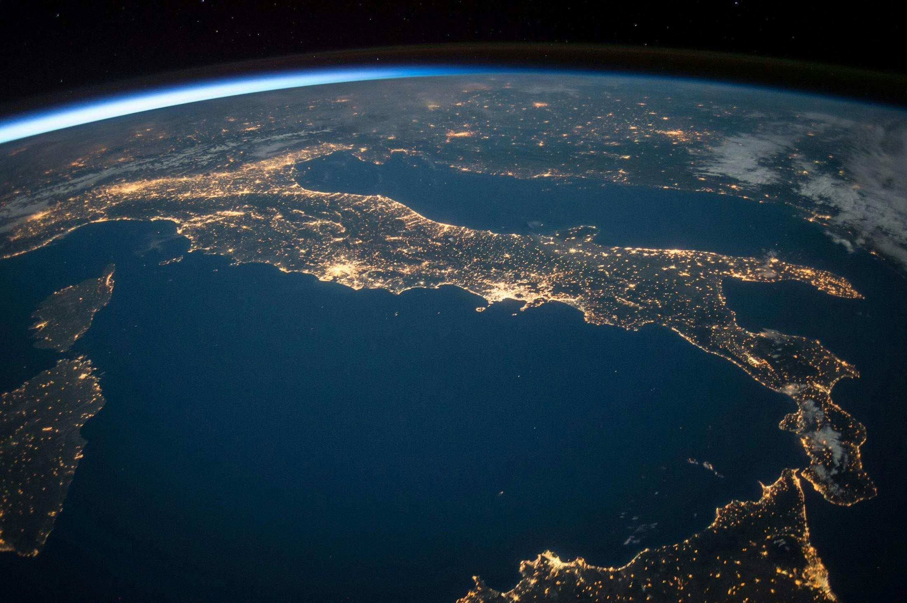

Развитие космоса
Эволюция технологий, идей и стремлений человечества за пределы земной атмосферы.
Выполнил ученик 9В класса
Костюк Иван Андреевич
01. Технический прорыв
Развитие космоса началось с теоретических расчетов Константина Циолковского и инженерного гения Сергея Королева. Переход от фантазий к реальным полетам произошел в середине XX века.
- 1957 год: Запуск первого искусственного спутника Земли. Начало космической эры.
- 1961 год: Первый полет человека в космос. Юрий Гагарин доказал, что человек может работать на орбите.

02. Роботизированные исследователи
Важнейший этап развития — отправка аппаратов туда, где человек пока не может выжить. Автоматические межпланетные станции стали нашими "глазами" в глубоком космосе.
- Изучение Луны, Марса и Венеры с помощью посадочных модулей.
- Миссии «Вояджер», вышедшие за пределы Гелиосферы.
- Телескопы «Хаббл» и «Джеймс Уэбб», заглянувшие вглубь Вселенной на миллиарды лет назад.

03. Жизнь на орбите
Развитие космических станций превратило кратковременные полеты в постоянное присутствие человечества в космосе. Станции «Салют», «Мир», а теперь и МКС стали международными лабораториями.
Здесь изучается влияние невесомости на организм, выращиваются кристаллы и тестируются технологии замкнутого жизнеобеспечения для будущих дальних перелетов.

04. Коммерциализация и многоразовость
Современный этап развития космоса характеризуется приходом частных компаний и кардинальным удешевлением полетов.
- Внедрение многоразовых ступеней ракет значительно снизило стоимость вывода грузов.
- Развитие глобальных спутниковых сетей для высокоскоростного интернета по всей планете.
- Активная подготовка к возвращению на Луну (программа Artemis) и проектирование марсианских кораблей.

Будущее за развитием
Развитие космоса — это не просто престиж или чистая наука. Это поиск ответов на фундаментальные вопросы, создание новых материалов на орбите и обеспечение долгосрочного выживания человечества.
«Земля — колыбель человечества, но нельзя вечно жить в колыбели». — К. Э. Циолковский